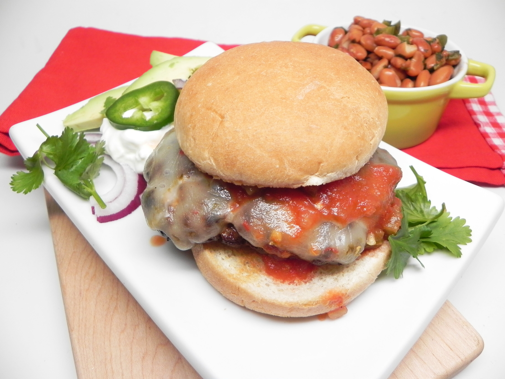

Taco Burgio
Burgers with a taco twist. I like to serve this with sangria and a side of nachos.

Ingredients
- 1 pound ground beef
- 1 (1 ounce) packet taco seasoning
- 5 slices pepper Jack cheese
- 5 roll (blank)s hamburger buns, split
- ¼ cup sour cream, or to taste
- ¼ cup salsa, or to taste
- 1 cup chopped fresh cilantro
- 1 tomato, sliced
- 1 avocado, sliced
- ½ onion, sliced
Directions
- Preheat an outdoor grill for medium-high heat and lightly oil the grate.
- Mix ground beef and taco seasoning together in a bowl with your hands. Separate mixture into 5 equal portions. Form into patties.
- Cook patties on the preheated grill for 5 minutes. Flip, top with pepper Jack cheese slices, and continue to grill until no longer pink or to desired doneness, about 5 minutes more. An instant-read thermometer inserted into the center of a patty should read at least 160 degrees F (70 degrees C).
- Spread sour cream and salsa on buns, add patties, and top with cilantro, tomato, avocado, and onion.